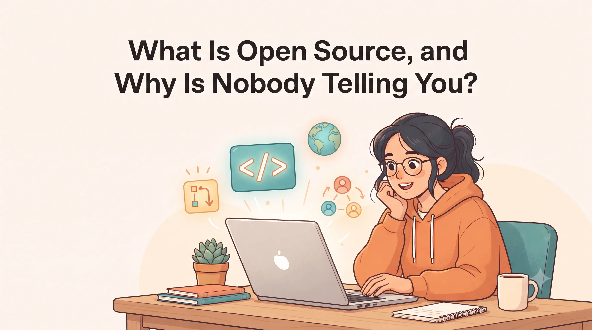

What Is Open Source, and Why Is Nobody Telling You?

You have probably heard the term “open source” in college, in a club, or in a placement talk. Maybe someone said “contribute to open source” and moved on before explaining what that means. Many students are in the same spot, and that is exactly why this blog exists.
What is open source?
Open source software is software whose code anyone can read, use, and suggest changes to. Firefox and the Linux operating system are well-known examples. Newer examples include open-weight AI models, which people can download, run, and improve on their own machines.
The key idea is that the code is public. You can open it, see how it works, and ask the people who maintain it to accept your changes.
Why does it still feel unknown?
Google Summer of Code is known mostly because Google runs it. Programs like LFX and MLH are rarely mentioned in the colleges I know of. So a student who has never been told about them has no reason to look.
That is a loss, because open source is one of the best free learning spaces available to students. Real projects teach things that tutorials rarely do:
- How to write industry-level code. Real projects have standards for naming, testing, and style.
- How real systems work. You can read code that runs on millions of devices, not just small demo apps.
- How to communicate. You learn to write clear issues, ask good questions, and explain your changes to strangers.
- How teams work. You see how maintainers review code, make decisions, and handle disagreements.
Most of this costs nothing except your time and curiosity.
Try it yourself on your own device
You do not need to wait for permission to start. Many open source projects can run on your own laptop.
Take Gemma, an open-weight AI model from Google. You can download it and run it locally with tools like Ollama. Once it runs, you can change a setting, try a different prompt format, or read how the project loads the model. Then you can break something on purpose and fix it. That process teaches more than watching ten videos.
The same idea works for many other projects. Pick a small tool you already use, clone its code, run it, and see what happens. If it fails, read the error message. Errors are the best teachers in open source.
Breaking things on your own machine is safe. Your copy of the code is yours. Nothing you change there affects the real project until you choose to send a pull request.
What is Hacktoberfest?
Hacktoberfest is one of the largest open source programs ever run. It started in 2014 as a yearly challenge run by DigitalOcean. For years, the rule was simple: make pull requests to open source projects during October and earn a T-shirt. A pull request, or PR, is a way to propose a change to someone else’s project.
That format worked for many students, but it had a problem. Maintainers received a flood of low-effort pull requests, made just to hit a count. Reviewing and closing them took time away from real work. The official site says this problem grew worse as AI tools made low-effort pull requests easy to generate.
So in 2026, Hacktoberfest changed its focus. It no longer counts pull requests for rewards. Instead, it runs events, called Fests, where people learn and build with open-source AI. The lesson is that open source is about learning and contributing. The prizes were never the point.
What happens after you open a PR?
Once you send a pull request, a few things usually happen. An automated check may run to see if your change builds and passes tests. A maintainer may leave comments, ask questions, or request changes. You may need to edit your code and push the update, and the pull request updates automatically.
This back and forth is normal. It is the review process, and it is where most of the learning happens.
Problems students face
No reply after a pull request
The problem is that you may hear nothing for weeks. This is common because maintainers are often volunteers with their own jobs and studies. Silence does not always mean rejection. Sometimes the project is just busy.
“Good first issue” is not always good
An issue is a task or problem written on a project’s page. Many projects label some issues “good first issue” to show beginners where to start.
The label is a hint, not a promise. Some of these issues are truly easy, like fixing a typo. Others need real knowledge of the project, like changing how a feature works across several files. If you pick the wrong one, you can spend days stuck without help.
Fear of breaking something
Many students worry that their change will make the project worse. This fear stops people before they even try.
In open source, a pull request is a proposal for review. Nothing goes live without the maintainers agreeing to it. Reviewers expect beginners to make mistakes, and a change can be edited, improved, or closed without blame.
Tutorials do not teach maintenance
Tutorials teach you to build something from start to finish. They do not teach how real projects are kept running. You rarely learn how to read a failed build log, follow a contribution guide, or respond to review comments.
These habits matter more than any single feature. They are what people on real teams do every day.
How do you judge a project?
Before you invest time in a project, you can check a few things. Look at when the last change was made. Check whether issues are being answered or piling up. Read the README to see if it explains how to set up the project.
A question to end with
After you finish your task, write down one thing you learned from it, even if your pull request was never accepted. That note is your real result from open source. Many people who contribute today started with a change that was not merged, and they kept what they learned from it.
We are not giving you the answers
This blog will not solve these problems for you. It will tell you that you are not alone, give you one small push, and leave the rest to you. Open source is learned by trying, failing, and trying again.
your task for today
Find one open source project you already use and read its contributing guide. That is the first step.
Next up: why Linus built Git ✱